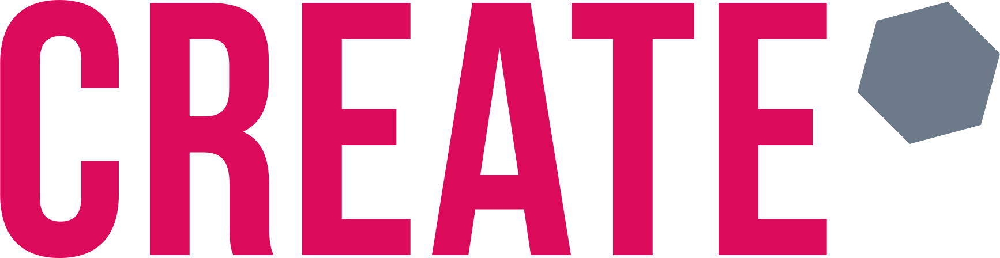
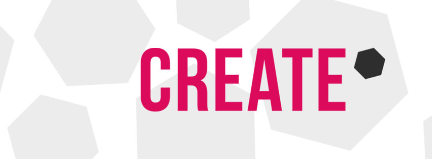
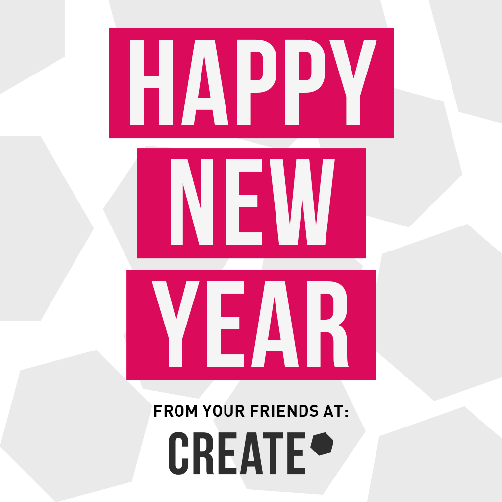
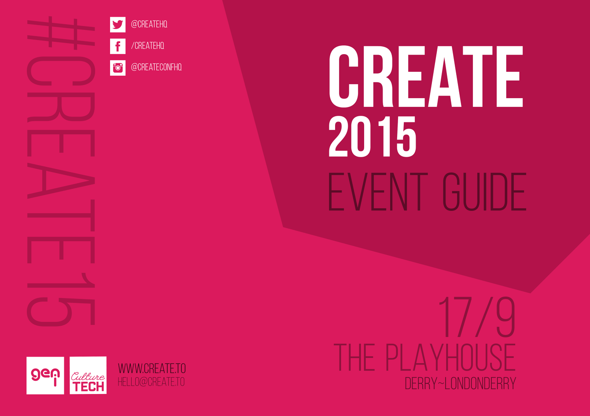
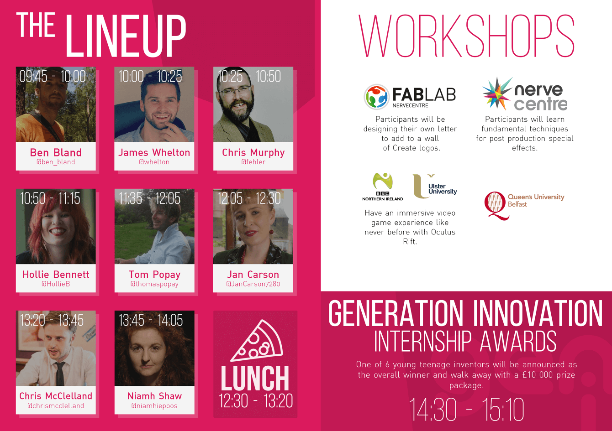

Create was a one day creative conference for young people in Derry~Londonderry that took place during CultureTech 2015. Create has featured speakers from the BBC, Facebook, Microsoft, Playstation and more.

Visual identity - Created to be similar to the 2014 identity but also have unique elements. I took a more refined apporach but kept an element of playfulness by utilising a bright fuschia colour.

Social Media Header - Used on a variety of platforms including Facebook and Twitter.

Social Media Graphic - These share graphics were used extensively in the lead up to the event. Used on a variety of platforms including Facebook and Twitter.
Video - This video was created as a looping event for the start of the conference. Played on the screen whilst the audience arrived and during breaks.

Programme Exterior - Exterior of the 2015 Create programme. Designed to mantain the theme already established with the brand identity.

Programme Interior - Interior of the 2015 Create programme. Designed to mantain the theme already established with the brand identity.